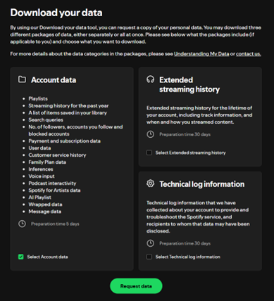
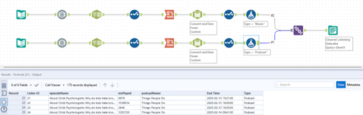
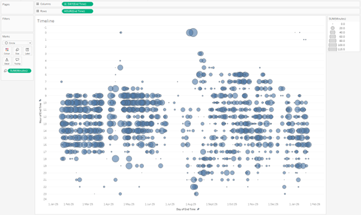
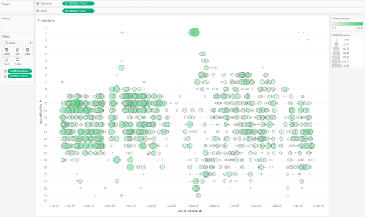
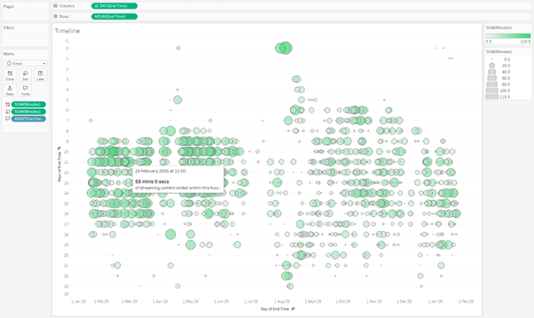
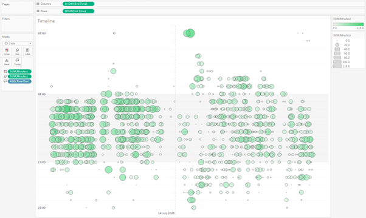
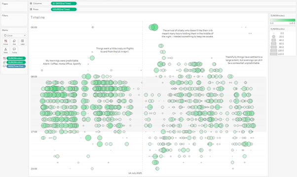
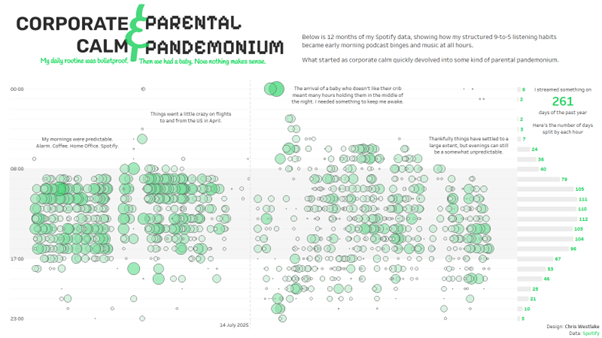

Having the option to work from home is one of the things I like most about my job. No commute. No need to think about packing lunch. No worrying about whether my mug will still be available when I get into the office. It does have its drawbacks though. The general hubbub of an office can be a very calming thing, and I always find that I concentrate better with some general background noise. My wife does not work from home, so things can get starkly quiet for large chunks of my day. To bring that background noise, I often turn to music (mostly instrumental). It helps me concentrate, and is a driving force on the occasions when I manage to hyperfocus and churn out a fully operational dashboard in under a day.
Lately things have been a little bit different, however. Followers of the blog will know that last year we welcomed our first child into the world. Naturally, everything changed. I decided to download my streaming data from Spotify to see how noticeable the change had been in this one (what I consider to be a minor) part of my life.
The result was this visualisation. There is nothing particularly complex here, and this is not a how-to blog. Rather I want to share some of my thought process while creating this. The main aim for me was to let the data tell a story with minimal comments or interactivity needed.

Getting the Data
Spotify allow you to request and download all of your streaming history for the past year. It is very easy to request the data, and takes about a week for it to arrive. You can also get access to your streaming history for the lifetime of your account, but this option took a little longer than I was willing to wait (30 days).

After waiting patiently for a few days, the data arrived as a zip folder containing 16 json files. I was only really interested in 2 of these – my music and podcast streaming history. I pulled these into Alteryx (though any data preparation tool will work here), and did some basic transformations to shape the data how I wanted it.

The output was one file containing a row for every time I listened to something. It shows what I listened to, and how long for. The above snippet shows that I listened to a Things People Do podcast in 4 chunks over a couple of days. With this data, I was ready to pull it into Tableau and begin visualising.
Visualising the Data
I had a good idea of the story that I wanted to tell from the outset. My listening time used to be very orderly. My son was born and it went a little crazy as I would sit listening to podcasts in the early hours of the morning because he wouldn’t sleep unless someone was holding him. Things settled down as he got a little bit older, but my listening habits haven’t fully returned to their pre-child state.
In Tableau I put Day onto Columns and Hour onto Rows. Set both to be continuous fields and sized the resulting dots by amount of time listened. Immediately, I could see that story start to jump off the page.

Colour is a really powerful tool in data viz, and this blue wasn’t working for me at all. Using colours to help bind your work to an association people already have can be very useful. I put the time listened field onto colour as well as size, and used the green from Spotify’s logo as the end point for a sequential colour palette.

My focus turned to tooltips next. Never keep default tooltips in a Tableau dashboard. Customising them allows you to add information that can really elevate your visualisation and support the story that you are trying to tell. I used a calculated field (the only one in this project) to create a string value with the time in a more readable format than number of milliseconds (what even is a millisecond anyway?).

This was one point where I noticed a bit of a strange thing with the data. Time stamps are always when streaming ended which in some cases led to some interesting (and impressive) listening times. If I listened to a podcast that lasted over an hour in one go, it would show all that time in one hour. The result is several points in this chart that suggest I listened to more than 60 minutes of content in an hour. I decided to ignore this, but you could find a way to split the streaming data for a more accurate result. For me, and the story I was trying to uncover, it wasn’t worth the additional effort.
This version of the worksheet was close to the final result, but I wanted to help make my insights jump off the page. I used 2 techniques to do this. The first was using reference lines. I wanted to highlight my working day in this data. A reference band from 8am to 5pm helps this stand out nicely. I also wanted to make the shift easily identifiable, which you can see by the reference line highlighting the day my son was born. The nice thing about these bands and lines is that they could double as axis markers so I didn’t need to keep the traditional headers.

The other technique I used was annotations. This meant that I could highlight key parts of the story to guide the viewer through it. I know where the pivotal points are, and why they are there, but other people won’t necessarily. These comments help to add that extra bit of context.

It was now time to pull this into a dashboard. I really wanted to highlight the hours that I most often listen to music. To help with this, the final dashboard has an additional sheet showing the number of days in the last year that I listened to music in each hour of the day. With this added, and a playful title inspired by ChatGPT, the dashboard was complete.

The focus here isn’t a deep analysis. It’s an aggregated look at how behaviour changes over time. By mixing in details of separate events, you are able to uncover the reasons behind the shift. I think this is where the power of Tableau comes. Their mission from day one was to help people see and understand their data. This is something that I think this visualisation does really powerfully.
It would have been very easy to go off track with this. There is so much detail in the data that I haven’t touched at all. What songs did I listen to the most? What was my favourite podcast? None of these questions were related to the story that I set out to tell, so I haven’t included them here. Maybe that is something I’ll come back to in a future project.
//
For now, what story would you tell with your own music streaming data? And what are your favourite techniques for telling a story with data that remains focussed on what you set out to achieve?
Take care // Chris